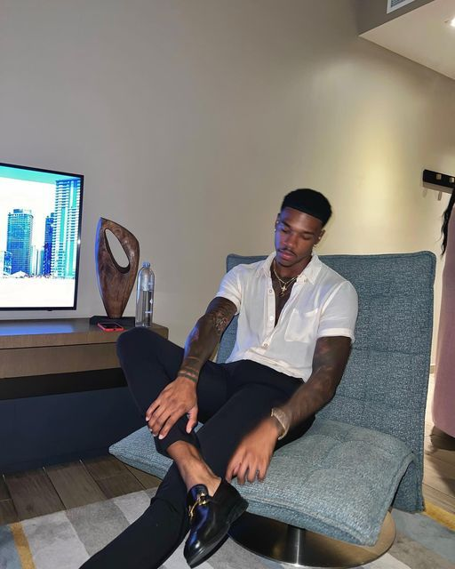
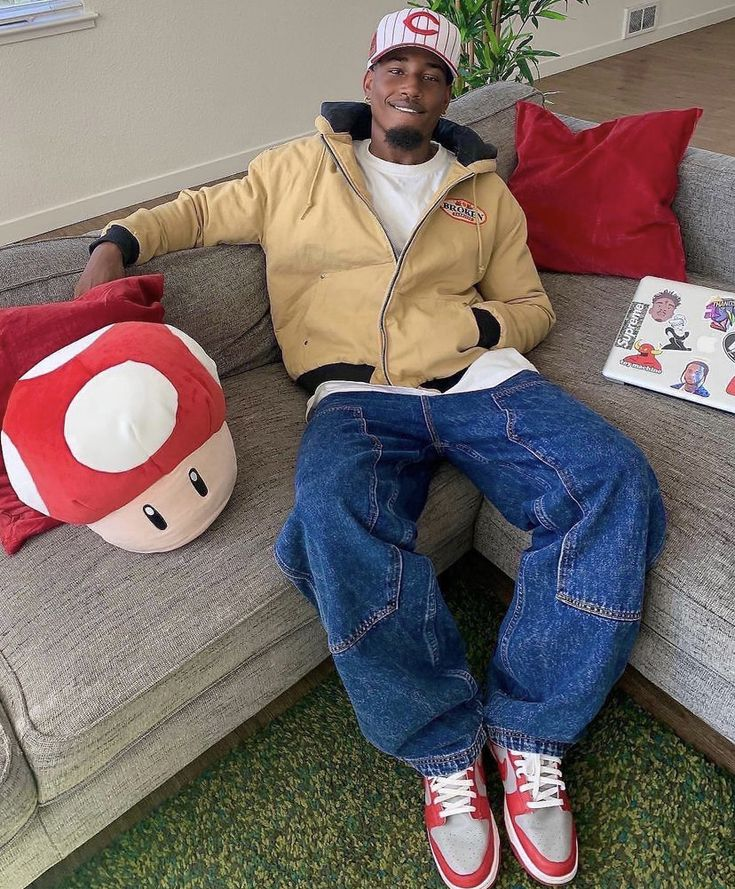
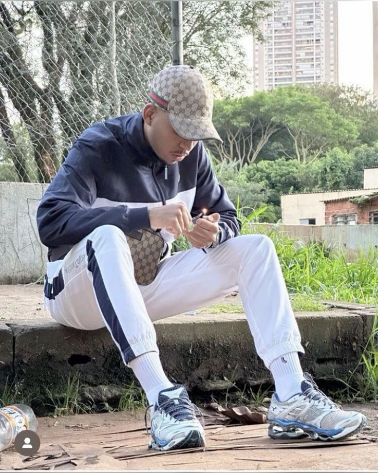

Encontre sua personalidade em estilos de roupas:
OldMoney
O estilo "old money" é caracterizado por moda clássica e sofisticada, com roupas de alta qualidade, cores neutras, e acessórios discretos. Valoriza a elegância, a tradição e um estilo de vida reservado, sem ostentação.
Streetwear
O estilo "streetwear" é uma moda urbana que combina elementos da cultura jovem, como skate e hip-hop. É caracterizado por roupas casuais, como camisetas oversized, tênis, moletons e acessórios como bonés e mochilas. O estilo valoriza a individualidade, muitas vezes incorporando gráficos, logotipos e designs ousados.
Uk Drip

O "UK drip" é um estilo urbano que surgiu no Reino Unido, associado à música grime e rap. Caracteriza-se por roupas oversized, tênis chamativos, estampas ousadas e acessórios como bonés e correntes. O estilo valoriza marcas de streetwear e a autenticidade, refletindo a cultura jovem.
Starboy
O estilo "starboy" é influenciado pela estética glamourosa da cultura pop e pela música contemporânea. É caracterizado por roupas ousadas e chamativas, como camisetas oversized, jaquetas de couro, calças justas e acessórios luxuosos. O visual frequentemente inclui tênis de grife e detalhes metálicos, refletindo uma mistura de sofisticação e atitude urbana, ideal para quem busca destacar-se e exibir uma identidade marcante.
Sportlife
O estilo "sportlife" combina moda esportiva e casual, priorizando conforto e funcionalidade. É marcado por roupas de times, leggings, camisetas de performance, tênis confortáveis e jaquetas leves, ideal para um visual descontraído e estiloso.
Us drip

O "US drip" que você se refere é um estilo urbano marcado pelo uso de calças skinny, frequentemente combinadas com camisetas justas e jaquetas de couro ou oversized. Esse visual, que tem raízes na cultura hip-hop e streetwear, enfatiza uma silhueta ajustada e um toque mais sofisticado. Acessórios como bonés e correntes são comuns, acrescentando personalidade e autenticidade ao look.
Ter estilo é expressar sua personalidade e individualidade por meio da forma como você se veste, se comporta e se apresenta. Não se trata apenas de seguir tendências, mas de saber combinar roupas, acessórios e atitudes que refletem quem você é. Ter estilo envolve confiança, criatividade e autenticidade, permitindo que seu visual comunique algo sobre sua identidade e gostos pessoais.